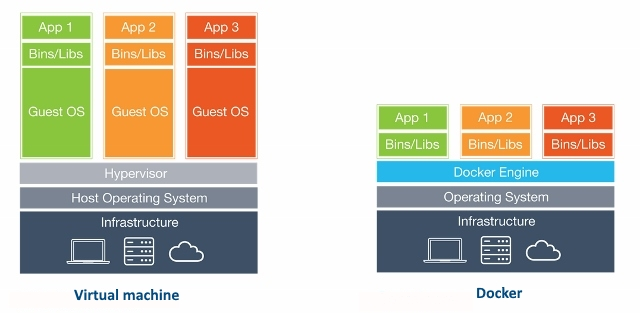

Docker Docs¶
What is docker?¶
Docker is a tool designed to make it easier to create, deploy, and run applications by using containers.
Why docker?¶
Docker is useful to automate the deployment of applications inside a software containers, which makes the applications easy to ship and run virtually anywhere (i.e, platform independent). The Docker container processes run on the host kernel, unlike VM which runs processes in guest kernel.

Installation¶
The docker desktop downloads are available for windows, mac and linux distributions.
Windows¶
It supports for Windows 10 64-bit: Home, Pro, Enterprise, or Education, version 1903 (Build 18362 or higher). You need to follow the below steps for installation.
- Download docker desktop for windows from https://docs.docker.com/docker-for-windows/install/
- Double-click
Docker Desktop Installer.exeto run the installer. - Make sure
Enable Hyper-V Windows Featuresoption is selected
Mac¶
- Download docker desktop for mac from https://docs.docker.com/docker-for-mac/install/
- Double-click
Docker.dmgto open the installer and drag it to the Applications folder. - Double-click
Docker.appin the Applications folder to start Docker.
Linux¶
You can install from a package easily 1. Go to https://download.docker.com/linux/ubuntu/dists/, choose your Ubuntu version and then go to pool/stable/ to get .deb file 2. Install Docker Engine by referring the downloaded location of the Docker package.
3. Verify the Docker Engine by running thehello-world image to check correct installation.
Registries and Repositories¶
Registry:¶
Docker Registry is a service that stores your docker images. It could be hosted by a third party, as public or private registry. Some of the examples are,
- Docker Hub,
- Quay,
- Google Container Registry,
- AWS Container Registry
Repository:¶
A Docker Repository is a collection of related images with same name which have different tags. These tags are an alphanumeric identifiers(like 1.0 or latest) attached to images within a repository.
For example, if you want to pull golang image using docker pull golang:latest command, it will download the image tagged latest within the golang repository from the Docker Hub registry. The tags appeared on dockerhub as below,
Login¶
Login to a registry
> docker login [OPTIONS] [SERVER]
[OPTIONS]:
-u/--username username
-p/--password password
Example:
1. docker login localhost:8080 // Login to a registry on your localhost
2. docker login
Logout¶
Logout from a registry
> docker logout [SERVER]
Example:
docker logout localhost:8080 // Logout from a registry on your localhost
Search image¶
Search for an image in registry
docker search [OPTIONS] TERM
Example:
docker search golang
docker search --filter stars=3 --no-trunc golang
Pull image¶
This command pulls an image or a repository from a registry to local machine
Push image¶
This command pushes an image to the registry from local machine.
Create,Run,Update and Delete containers¶
Create¶
Create a new container
docker container create [OPTIONS] IMAGE [COMMAND] [ARG...]
Example:
docker container create -t -i sudheerj/golang --name golang
Rename¶
Rename a container
docker container rename CONTAINER NEW_NAME
Example:
docker container rename golang golanguage
docker container rename golanguage golang
Run¶
docker container run [OPTIONS] IMAGE [COMMAND] [ARG...]
Example:
docker container run -it --name golang -d sudheerj/golang
You can also run a command inside container
docker exec [OPTIONS] CONTAINER COMMAND [ARG...]
Example:
docker exec -it golang sh // Or use bash command if sh is failed
Update¶
Update configuration of one or more containers
docker container update [OPTIONS] CONTAINER [CONTAINER...]
Example:
docker container update --memory "1g" --cpuset-cpu "1" golang // update the golang to use 1g of memory and only use cpu core 1
Remove¶
Remove one or more containers
docker container rm [OPTIONS] CONTAINER [CONTAINER...]
Example:
docker container rm golang
docker rm $(docker ps -q -f status=exited) // Remove all the stopped containers
Start and stop containers¶
Start¶
Start one or more stopped containers
Stop¶
Stop one or more running containers
docker container stop [OPTIONS] CONTAINER [CONTAINER...]
Example:
docker container stop golang
docker stop $(docker ps -a -q) // To stop all the containers
Restart¶
Restart one or more containers and processes running inside the container/containers.
docker container restart [OPTIONS] CONTAINER [CONTAINER...]
Example:
docker container restart golang
Pause¶
Pause all processes within one or more containers
Unpause/Resume¶
Unpause all processes within one or more containers
Kill¶
Kill one or more running containers
Wait¶
Block until one or more containers stop and print their exit codes after that
⬆ Back to TopNetworks¶
Docker provides network commands connect containers to each other and to other non-Docker workloads. The usage of network commands would be docker network COMMAND
List networks¶
List down available networks
Connect a container to network¶
You can connect a container by name or by ID to any network. Once it connected, the container can communicate with other containers in the same network.
docker network connect [OPTIONS] NETWORK CONTAINER
Example:
docker network connect multi-host-network container1
Disconnect a container from a network¶
You can disconnect a container by name or by ID from any network.
docker network disconnect [OPTIONS] NETWORK CONTAINER
Example:
docker network disconnect multi-host-network container1
Remove one or more networks¶
Removes one or more networks by name or identifier. Remember, you must first disconnect any containers connected to it before removing it.
Create network¶
It is possible to create a network in Docker before launching containers
docker network create [OPTIONS] NETWORK
Example:
sudo docker network create –-driver bridge some_network
The above command will output the long ID for the new network.
Inspect network¶
You can see more details on the network associated with Docker using network inspect command.
Cleanup commands¶
You may need to cleanup resources (containers, volumes, images, networks) regularly.
Remove all unused resources¶
Images¶
$ docker images
$ docker rmi $(docker images --filter "dangling=true" -q --no-trunc)
$ docker images | grep "none"
$ docker rmi $(docker images | grep "none" | awk '/ / { print $3 }')
Containers¶
Volumes¶
$ docker volume rm $(docker volume ls -qf dangling=true)
$ docker volume ls -qf dangling=true | xargs -r docker volume rm
Networks¶
$ docker network ls
$ docker network ls | grep "bridge"
$ docker network rm $(docker network ls | grep "bridge" | awk '/ / { print $1 }')
Utility commands¶
Docker Hub¶
Docker Hub is a cloud-based repository provided by Docker to test, store and distribute container images which can be accessed either privately or publicly.
From¶
It initializes a new image and sets the Base Image for subsequent instructions. It must be a first non-comment instruction in the Dockerfile.
Note: Bothtag and digest are optional. If you omit either of them, the builder assumes a latest by default.
Dockerfile¶
Dockerfile is a text document that contains set of commands and instructions which will be executed in a sequence in the docker environment for building a new docker image.
FROM¶
This command Sets the Base Image for subsequent instructions
RUN¶
RUN instruction allows you to install your application and packages required for it. It executes any commands on top of the current image and creates a new layer by committing the results. It is quite common to have multiple RUN instructions in a Dockerfile.
It has two forms
1. Shell Form: RUN
ENTRYPOINT¶
An ENTRYPOINT allows you to configure a container that will run as an executable. It is used to run when container starts.
Exec Form:
ENTRYPOINT ["executable", "param1", "param2"]
Shell Form:
ENTRYPOINT command param1 param2
Example:
FROM alpine:3.5
ENTRYPOINT ["/bin/echo", "Print ENTRYPOINT instruction of Exec Form"]
If an image has an ENTRYPOINT and pass an argument to it while running the container, it wont override the existing entrypoint but it just appends what you passed with the entrypoint. To override the existing ENTRYPOINT. you should user –entrypoint flag for the running container.
Let's see the behavior with the above dockerfile,
Build image:
docker build -t entrypointImage .
Run the image:
docker container run entrypointImage // Print ENTRYPOINT instruction of Exec Form
Override entrypoint:
docker run --entrypoint "/bin/echo" entrypointImage "Override ENTRYPOINT instruction" // Override ENTRYPOINT instruction
CMD¶
CMD instruction is used to set a default command, which will be executed only when you run a container without specifying a command. But if the docker container runs with a command, the default command will be ignored.
The CMD instruction has three forms,
1. Exec form:
CMD ["executable","param1","param2"]
2. Default params to ENTRYPOINT:
CMD ["param1","param2"]
3. Shell form:
CMD command param1 param2
The main purpose of the CMD command is to launch the required software in a container. For example, running an executable .exe file or a Bash terminal as soon as the container starts.
Remember, if docker runs with executable and parameters then CMD instruction will be overridden(Unlike ENTRYPOINT).
Note: There should only be one CMD command in your Dockerfile. Otherwise only the last instance of CMD will be executed.
COPY¶
The COPY instruction copies new files or directories from source and adds them to the destination filesystem of the container.
COPY [--chown=<user>:<group>] <src>... <dest>
COPY [--chown=<user>:<group>] ["<src>",... "<dest>"]
Example:
COPY test.txt /absoluteDir/
COPY tes? /absoluteDir/ // Copies all files or directories starting with test to destination container
The WORKDIR.
ADD¶
The ADD instruction copies new files, directories or remote file URLs from source and adds them to the filesystem of the image at the destination path. The functionality is similar to COPY command and supports two forms of usage,
ADD [--chown=<user>:<group>] <src>... <dest>
ADD [--chown=<user>:<group>] ["<src>",... "<dest>"]
Example:
ADD test.txt /absoluteDir/
ADD tes? /absoluteDir/ // Copies all files or directories starting with test to destination container
ADD commands provides additional features such as downloading remote resources, extracting TAR files etc.
1. Download an external file and copy to the destination
ADD http://source.file/url /destination/path
2. Copies compressed files and extract the content in the destination
ADD source.file.tar.gz /temp
ENV¶
The ENV instruction sets the environment variable
- The first form,
ENV <key> <value>, will set a single variable to a value. - The second form,
ENV <key>=<value> ..., allows for multiple variables to be set at one time.
ENV <key> <value>
ENV <key>=<value> [<key>=<value> ...]
Example:
ENV name="John Doe" age=40
ENV name John Doe
ENV age 40
EXPOSE¶
The EXPOSE instruction informs Docker that the container listens on the specified network ports at runtime. i.e, It helps in inter-container communication. You can specify whether the port listens on TCP or UDP, and the default is TCP.
But if you want to bind the port of the container with the host machine on which the container is running, use -p option of docker run command.
WORKDIR¶
The WORKDIR command is used to define the working directory of a Docker container at any given time for any RUN, CMD, ENTRYPOINT, COPY and ADD instructions that follow it in the Dockerfile.
LABEL¶
The LABEL instruction adds metadata as key-value pairs to an image. Labels included in base or parent images (images in the FROM line) are inherited by your image.
LABEL <key>=<value> <key>=<value> <key>=<value> ...
Example:
LABEL version="1.0"
LABEL multi.label1="value1" \
multi.label2="value2" \
other="value3"
You can view an image’s labels using the docker image inspect --format='' myimage command. The output would be as below,
MAINTAINER¶
The MAINTAINER instruction sets the Author field of the generated images.
This command is deprecated status now and the recommended usage is with LABEL command
VOLUME¶
The VOLUME instruction creates a mount point with the specified name and mounted volumes from native host or other containers.
Docker Compose¶
Docker compose(or compose) is a tool for defining and running multi-container Docker applications.
Docker Swarm¶
Docker Swarm(or swarm) is an open-source tool used to cluster and orchestrate Docker containers.